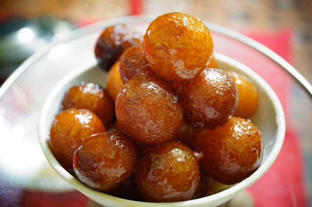

Gulab Jamun Recipe

Authentic and Delicious: A Recipe Straight from My Kitchen!
Gulab Jamun is a classic Indian sweet, loved for its rich, indulgent flavor and melt-in-the-mouth texture. This recipe is a true representation of the traditional dish, made with authentic ingredients and perfected with my personal touch.
Description
Gulab Jamun are delicate, berry-sized delights that are a perfect blend of softness and sweetness. These golden, deep-fried balls are made from a rich dough of khoya (milk solids) and flour, which are gently fried until they reach a light, crispy exterior. Once soaked in aromatic sugar syrup infused with cardamom and rose water, they become irresistibly soft and spongy. The warm syrup absorbs into the balls, making each bite a melt-in-your-mouth experience. The balance of sweetness and subtle floral notes creates a truly indulgent treat, making Gulab Jamun a beloved dessert at festivals, family gatherings, and special occasions.
Given are the ingredients for the recipe :
Ingredients
For the Dough
- 1 cup khoya (milk solids), grated
- 2 tablespoons all-purpose flour
- 1/4 teaspoon baking powder
- 2 tablespoons milk, or as needed for kneading
- 1 tablespoon ghee (clarified butter)
For the Sugar Syrup:
- 1 1/2 cups sugar
- 1 1/2 cups water
- 1/2 teaspoon cardamom powder
- A few drops of rose water (optional)
- A few saffron strands (optional)
For Frying:
- Oil or ghee, for deep frying
Steps to make Perfect Gulab Jamun :
- In a large mixing bowl, combine the grated khoya, all-purpose flour, and baking powder. Mix well.
- Add a small amount of milk and gently knead the mixture into a soft, smooth dough. Be careful not to over-knead.
- Divide the dough into small portions and roll each portion into a smooth, crack-free ball. Set aside.
- In a saucepan, combine the sugar and water for the syrup. Bring it to a boil, then reduce the heat and let it simmer for 5-7 minutes, until slightly thickened.
- Add the cardamom powder, rose water, and saffron strands (if using) to the syrup, and stir. Keep the syrup warm on low heat.
- In a deep pan, heat the oil or ghee over medium heat. Ensure it’s hot but not smoking.
- Carefully add the dough balls to the hot oil, frying them on low to medium heat. Stir gently and fry until golden brown on all sides.
- Remove the fried balls with a slotted spoon and immediately place them into the warm sugar syrup.
- Allow the Gulab Jamun to soak in the syrup for at least 30 minutes before serving, so they absorb the syrup fully.
Enjoy your homemade Gulab Jamun, served warm or chilled, and savor every delicious bite of this classic, indulgent dessert.Happy cooking!